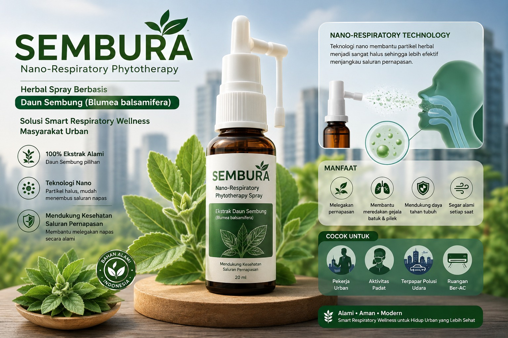

Pesan
SEMBURA
Smart Respiratory Wellness
Nano-Respiratory Phytotherapy dengan Herbal Spray Daun Sembung untuk napas lebih lega, hidup lebih sehat.

100%
EKSTRAK
ALAMI
ALAMI
Catatan: Web ini bukan pengganti diagnosis medis profesional.


Edit Profil
Potong Foto